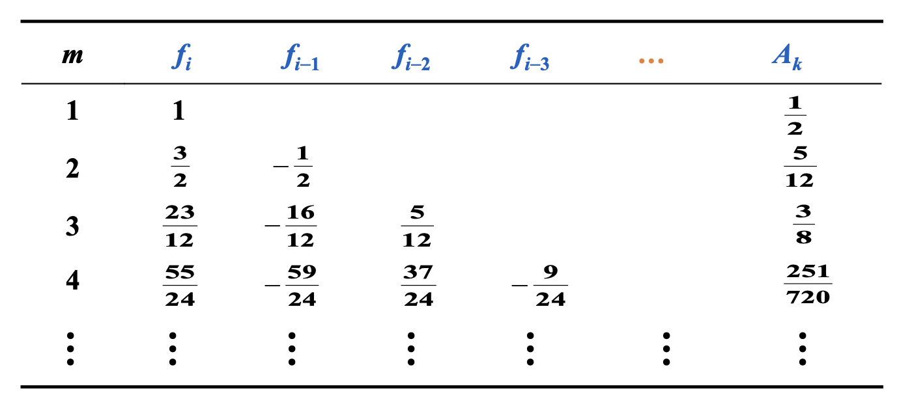
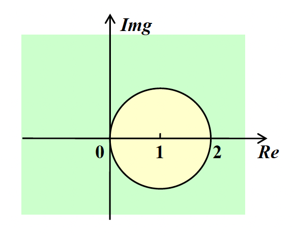

Chapter 5: Initial-Value Problems for Ordinary Differential Equations¶
5.1 The Elementary Theory of Initial-Value Problems¶
[!info] Initial-Value Problems for the \(1^{\text{st}}\) order Ordinary Differential Equations $$ \begin{cases} \dfrac{dy}{dt} = f(t, y), & t \in [a, b] \ y(a) = \alpha \end{cases} $$ 在一组网格点 (mesh points) \(a=t_0<t_1<⋯<t_n=b\) 上（通常是等间距的）计算 \(y(t)\) 的近似值。也就是说，计算 \(w_i \approx y(t_i)=y_i(i=1,\dots,n)\)
Definition 对于函数 \(f(t,y)\)，若存在常数 \(L>0\)，满足： $\(∣f(t,y_1)−f(t,y_2)∣\leq L∣y_1−y_2∣\)$ 我们称该函数满足在变量 \(y\in D⊂R^2\) 上的 Lipschitz 条件
Theorem 假设 \(D = \{(t, y)\ |\ a \le t \le b, -\infty < y < \infty\}\)，且 \(f(t, y)\) 在 \(D\) 上连续。若 \(f\) 满足在变量 \(y \in D\) 上的 Lipschitz 条件，那么初值问题 $$ y'(t) = f(t, y), a \le t \le b, y(a) = \alpha $$ 有唯一解 $\(y(t)，a \le t \le b\)$ Definition 若初值问题 $$ y'(t) = f(t, y), a \le t \le b, y(a) = \alpha $$ 满足以下条件，我们称之为适定性问题(well-posed problem)： 1. 问题存在唯一解 \(y(t)\) 2. \(\forall \varepsilon > 0\)，存在正常数 \(k(\varepsilon)\)，使得当 \(|\varepsilon_0| < \varepsilon\)，并且 \(\delta(t)\) 在 \([a, b]\) 上连续且 \(|\delta(t)| < \varepsilon\) 时，对于 $$ z'(t) = f(t, z) + \delta(t), a \le t \le b, z(a) = \alpha + \varepsilon_0 $$ 上述式子称为扰动问题 perturbed problem，存在唯一解 \(z(t)\)，满足 \(|z(t) - y(t)| < k(\varepsilon) \cdot \varepsilon\ (a \le t \le b)\)
Theorem 假设 \(D = \{(t, y)\ |\ a \le t \le b, -\infty < y < \infty\}\)，且 \(f(t, y)\) 在 \(D\) 上连续。若 \(f\) 满足在变量 \(y \in D\) 上的 Lipschitz 条件，那么初值问题 $$ y'(t) = f(t, y), a \le t \le b, y(a) = \alpha $$ 具有适定性(well-posed)。
5.2 Euler's Method¶
令 \(h\) 为步长， \(y'(t_0) \approx \dfrac{y(t_0 + h) - y(t_0)}{h}\ \Rightarrow\ y(t_1) \approx y(t_0) + hy'(t_0) = \alpha + hf(t_0, \alpha)\)

欧拉法(Euler's method)的核心是用切线近似曲线，它通过差分方程(difference equations)来计算近似值：\(\begin{cases}w_0 = \alpha \\ w_{i+1} = w_i + hf(t_i, w_i)\end{cases}\ (i = 0, \dots, n - 1)\)
Error Bound¶
[!Theorem] 假设 \(f\) 在 \(D = \{(t, y)\ |\ a \le t \le b, -\infty < y < \infty \}\) 上是连续的，且满足 Lipschitz 条件（对应常数 \(L\)）；且存在常数 \(M, \forall\ a \le t \le b\)，满足 \(|y''(t)| \le M\)。
令 \(y(t)\) 为初值问题 \(y'(t) = f(t, y), a \le t \le b, y(a) = \alpha\) 的唯一解，且 \(w_0, w_1, \dots, w_n\) 为通过欧拉法（对于某些正整数 \(n\)）得到的近似值，那么： $$|y_i - w_i| \le \dfrac{hM}{2L}[e^{L(t_i - a)} - 1] \quad (i = 0, 1, \dots, n) $$
[!note] \(y''(t)\) 可在不知道 \(y(t)\) 的情况下被计算出来： $\(y''(t) = \dfrac{d}{dt}y'(t) = \dfrac{d}{dt}f(t, y(t)) = \dfrac{\partial}{\partial t}f(t, y(t)) + \dfrac{\partial}{\partial y}f(t, y(t)) \cdot f(t, y(t))\)$
代入舍入误差后，差分方程为：\(\begin{cases}w_0 = \alpha \textcolor{red}{+ \delta_0} \\ w_{i+1} = w_i + hf(t_i, w_i) \textcolor{red}{+ \delta_{i+1}}\end{cases}(i = 0, \dots, n - 1)\)
Theorem 令 \(y(t)\) 为初值问题 \(y'(t) = f(t, y), a \le t \le b, y(a) = \alpha\) 的唯一解，且 \(w_0, w_1, \dots, w_n\) 为使用上述差分方程得到的近似值。若 \(|\delta_i| < \delta\ (i = 0, \dots, n)\)，那么对每一个 \(i\)，有 $$ |y_i - w_i| \le \dfrac{1}{L} \Big(\dfrac{hM}{2} + \dfrac{\delta}{h}\Big)[e^{L(t_i - a)} - 1] + |\delta_0|e^{L(t_i - a)} $$ 其中 \(h \ge \sqrt{2 \delta / M}\)，所以随着 \(h\) 的减小，误差会越来越小。
Other Euler's Methods¶
-
隐式欧拉法(implicit Euler's method) 隐式公式不能直接求解，一般需要用欧拉显式公式得到初值，然后用欧拉隐式公式进行迭代求解。因此，隐式公式比显式公式计算复杂，但稳定性好。
- \(y'(t_0) \approx \dfrac{y(t_0) - y(t_0 - h)}{h}\) \(\Rightarrow\ \textcolor{red}{y(t_1)} \approx y(t_0) + hy'(t_1) = \alpha + hf(t_1, \textcolor{red}{y(t_1)})\)
- 差分方程为 \(\begin{cases}w_0 = \alpha \\ \textcolor{red}{w_{i+1}} = w_i + hf(t_{i+1}, \textcolor{red}{w_{i+1}})\end{cases} \quad(i = 0, \dots, n - 1)\)
- 由于方程左右两边都有 \(w_{i+1}\)，需要通过解方程得到 \(w_{i+1}\)，而无法像一般的欧拉法那样直接计算
- 通常以迭代形式求解 \(w_{i+1}\)，其初始值 \(w_{0}\) 通过显式法给出
- 局部截断误差: \(\tau_{i+1} = \dfrac{y_{i+1} - w_{i+1}}{h} = -\dfrac{h}{2}y''(\xi_i) = O(h)\)
-
梯形法(trapezoidal method)
- 差分方程为 \(\begin{cases}w_0 = \alpha \\ \textcolor{red}{w_{i+1}} = w_i + \dfrac{h}{2}[f(t_i, w_i) + f(t_{i+1}, \textcolor{red}{w_{i+1}})]\end{cases} (i = 0, \dots, n - 1)\)
- 注：局部截断误差为 \(O(h^2)\)；但必须以迭代方式求解隐式方程
-
两步法(double-step method) 双步法相较于之前的方法，需要两个初始值，即 \(w_0\) 和 \(w_1\)，然后用这两个初始值来计算 \(w_2\) ，再用 \(w_1\) 和 \(w_2\) 来计算 \(w_3\)，以此类推。由于两步法用到了更多点的信息，因此能得到更精确的近似结果。
- \(y'(t_0) = \dfrac{1}{2h}[y(t_0 + h) - y(t_0 - h)] - \dfrac{h^2}{6}y^{(3)}(\xi_1)\) \(\Rightarrow\ y(t_2) \approx y(t_0) + 2hf(t_1, y(t_1))\)
- 差分方程为 \(\begin{cases}w_0 = \alpha \\ w_{i+1} = w_{i-1} + 2hf(t_i, w_i)\end{cases} \quad (i = 1, \dots, n - 1)\)
- 若假设 \(w_{i-1} = y_{i-1}, w_i = y_i\)，那么局部截断误差为 \(O(h^2)\)
5.3 High Order Taylor Methods¶
[!definition] 差分法 \(w_0 = \alpha ;\quad w_{i+1} = w_i + h\varphi(t_i, w_i), \text{ for each }i = 0, \dots, n - 1\) 具有以下局部截断误差(local truncation error)： $$\tau_{i+1}(h) = \dfrac{y_{i+1} - (y_i + h\varphi(t_i, y_i))}{h} = \dfrac{y_{i+1} - y_i}{h} - \varphi(t_i, y_i) \quad (i = 0, \dots, n - 1) $$
Note: 局部截断误差就是 \(\dfrac{y_{i+1} - w_{i+1}}{h}\)（基于假设 \(w_i = y_i\)）
欧拉法的局部截断误差： $$ \begin{align} \tau_{i+1} & = \dfrac{y_{i+1} - w_{i+1}}{h} = \dfrac{[y_i + hy'(t_i) + \frac{h^2}{2}y''(\xi_i)] - [y_i + hf(t_i, y_i)]}{h} \notag \ & = \dfrac{h}{2} y''(\xi_i) = O(h) \notag \end{align} $$ - 其中 \(y_{i+1} = y (t_{i+1}) = y (t_i + h) = y (t_i) + y' (t_i) h + y'' (\xi_i) \dfrac{h^2}{2}\) 欧拉法本质上是泰勒展开式的1阶形式，可通过 \(n = 1\) 时泰勒展开式得到的欧拉法近似表示 \(y(t)\)
高阶泰勒法公式为： $$ y_{i+1} = y_i + hf(t_i, y_i) + \dfrac{h^2}{2} f'(t_i, y_i) + \dots + \dfrac{hn}{n!}f(t_i, y_i) + \dfrac{h{(n+1)}}{(n+1)!}f(\xi_i, y(\xi_i)) $$ 对于阶数为 \(n\) 的泰勒法，其对应的差分方程为： $$ \begin{cases}w_0 = \alpha \ w_{i+1} = w_i + hT^{(n)}(t_i, w_i)\end{cases} \quad(i = 0, \dots, n - 1) $$ 其中 \(T^{(n)}(t_i, w_i) = f(t_i, w_i) + \dfrac{h}{2}f'(t_i, w_i) + \dots + \dfrac{h^{n-1}}{n!} f^{(n-1)}(t_i, w_i)\) - 若 \(y \in C^{n+1}[a, b]\)，那么局部截断误差是 \(O(h^n)\)。
[!question] 应用 \(n = 10\) 的 3 阶泰勒法，解决初值问题 \(y' = y - t^2 + 1, 0 \le t \le 2, y(0) = 0.5\)
这里的 \(n\) 是区间分段数，不是题目前面讲的阶数。
找到 \(f\) 的前两个导数： - \(f(t, y(t)) = y(t) - t^2 + 1\) - \(f'(t, y(t)) = y'(t) - 2t = y(t) - t^2 + 1 - 2t\) - \(f''(t, y(t)) = y'(t) - 2t - 2 = y(t) - t^2 - 2t - 1\)
得到：$\(\begin{align} T^{(3)}(t_i, w_i) & = f(t_i, w_i) + \dfrac{h}{2} f'(t_i, w_i) + \dfrac{h^2}{6}f''(t_i, w_i) \notag \\ & = \Big(1 + \dfrac{h}{2} + \dfrac{h^2}{6} \Big)(w_i - t_i^2 + 1) - \Big(1 + \dfrac{h}{3}\Big)ht_i - \dfrac{h^2}{3} \notag \end{align}\)$ 通过3阶泰勒法，得到差分方程：\(\begin{cases}w_0 = 0.5 \\ w_{i+1} = w_i + h\Big[\Big(1 + \dfrac{h}{2} + \dfrac{h^2}{6}\Big)(w_i - t_i^2 + 1) - \Big(1 + \dfrac{h}{3}ht_i + \dfrac{h^2}{3}\Big)\Big]\end{cases}\)
因为 \(n = 10\)，那么 \(h = 0.2, t_i = 0.2i, w_{i+1} = 1.22133w_i - 0.00855i^2 - 0.00853i + 0.21867\)
5.4 Runge-Kutta Methods¶
Runge-Kutta 法是一种具有 Taylor 方法的高阶局部截断误差，而且无需计算 \(f\) 的导数
思路：在单步法中，某个线段从 \((t_i, w_i)\) 出发，以某个斜率延伸至下一个点 \((t_{i+1}, w_{i+1})\)。我们可以通过找到更好的斜率来改善结果
观察以下修改过的欧拉法： $$ \begin{cases} w_{i+1} = w_i + h\Big[ \dfrac{1}{2} K_1 + \dfrac{1}{2} K_2 \Big] \ K_1 = f(t_i, w_i) \ K_2 = f(t_i + h, w_i + hK_1) \end{cases} $$ - 斜率是否必须是 \(K_1, K_2\) 的平均值？ - 步幅是否必须为 \(h\)？
将其进一步泛化（一般的平均值 -> 加权平均值）： $$ \begin{cases} w_{i+1} & = w_i + h[\textcolor{red}{\lambda_1} K_1 + \textcolor{red}{\lambda_2} K_2 ] \ K_1 & = f(t_i, w_i) \ K_2 & = f(t_i + \textcolor{red}{p}h, w_i + \textcolor{red}{p}hK_1) \end{cases} $$
要找到 \(\lambda_1, \lambda_2, p\)，使得该方法的局部阶段误差的阶数为2
- 写出 \(K_2\) 在 \((t_i, y_i)\) 上的泰勒展开式：$$ \begin{align} K_2 & = f(t_i + ph, y_i + phK_1) \notag \ & = f(t_i, y_i) + phf_t(t_i, y_i) + phK_1f_y(t_i, y_i) + O(h^2) \notag \ & = y'(t_i) + phy''(t_i) + O(h^2) \notag \end{align} $\(其中\)$ y''(t) = \dfrac{d}{dt}f(t, y) = f_t(t, y) + f_y(t, y) \dfrac{dy}{dt} = f_t(t, y) + f_y(t, y)f(t, y) $$
- 将 \(K_2\) 代入到第一个式子中：$$ \begin{align} w_{i+1} & = y_i + h{\lambda_1 y'(t_i) + \lambda_2[y'(t_i) + phy''(t_i) + O(h^2)]} \notag \ & = y_i + (\lambda_1 + \lambda_2) hy'(t_i) + \lambda_2 ph^2 y''(t_i) + O(h^3) \notag \end{align} $$
- 找到 \(\lambda_1, \lambda_2, p\)，使得 \(\tau_{i+1} = (y_{i+1} - w_{i+1}) / h = O(h^2)\) $$ \begin{cases} w_{i+1} & = y_i + (\lambda_1 + \lambda_2) hy'(t_i) + \lambda_2 ph^2 y''(t_i) + O(h^3) \ y_{i+1} & = y_i + hy'(t_i) + \dfrac{h^2}{2} y''(t_i) + O(h^3) \end{cases} $$ 比对上面两个方程，可以得到： $\(\lambda_1 + \lambda_2 = 1, \lambda_2 p = \dfrac{1}{2}\)$ 有无穷多个解，被称为2阶龙格-库塔法(Runge-Kutta method of order 2)
[! note] 2阶 Runge-Kutta 法的多种形式 - 中点法(midpoint method)：将从二阶泰勒法中的 \(T^{(2)}(t, y)\) 用 \(f(t + h / 2, y + (h / 2)f(t, y))\) 替换得到的差分方程法。 $$ \begin{cases} w_0 = \alpha \ w_{i+1} = w_i + hf(t_i + \dfrac{h}{2}, w_i + \dfrac{h}{2}f(t_i, w_i)) \end{cases} \quad (i = 0, \dots, N - 1) $$ - 改进欧拉法(modified Euler method)： $$ \begin{cases} w_0 = \alpha \ w_{i+1} = w_i + \dfrac{h}{2}[f(t_i, w_i) + f(t_{i+1}, w_i + hf(t_i, w_i))] \end{cases} \quad (i = 0, \dots, N - 1) $$ - Heun 法： $$ \begin{cases} w_0 = \alpha \ w_{i+1} = w_i + \dfrac{h}{4}[f(t_i, w_i) + 3f(t_i + \dfrac{2}{3}h, w_i + \dfrac{2}{3}hf(t_i, w_i))] \end{cases} \quad (i = 0, \dots, N - 1) $$
高阶 Runge-Kutta 法¶
[!note] 在使用龙格-库塔法时，主要的计算量在于求解 \(f\)。Butcher 已经帮我们建立好了每步求值次数与局部截断误差阶数之间的关系：
- 这说明了为什么人们更喜欢使用具有较小步长的小于 5 阶的 Runge-Kutta 方法
- 因为 Runge-Kutta 法是基于泰勒展开式的，所以 \(y\) 必须足够平滑，以获取在高阶方法下的更高的精度。通常低阶方法相比高阶方法会采用更小的步幅。

5.6 Multistep Methods¶
[!target] 使用 \(y, y'\) 在多个网格点(mesh points)上的线性组合，来更好地近似 \(y(t_{i+1})\)
求解初值问题 $$ y'=f(t,y),\quad a\leq t \leq b, \quad y(a)=\alpha $$ 的 m 步多步法(multistep method)的一般形式如下： $$ \begin{align} w_{i+1} &= \textcolor{red}{a_{m-1}} w_i + \textcolor{red}{a_{m-2}} w_{i-1} + \dots + \textcolor{red}{a_0} w_{i+1-m} \&+ h[\textcolor{red}{b_m} f(t_{i+1},w_{i+1}) + \textcolor{red}{b_{m-1}} f(t_i,w_i) + \dots + \textcolor{red}{b_0} f(t_{i+1-m},w_{i+1-m})] \end{align} $$ 其中 \(h=(b−a)/N\)，给定 \(m\) 个初始值 \(w_0,w_1,\dots ,w_{m−1}\)，\(a_0,a_1,\dots ,a_{m−1}\) 和 \(b_0,b_1,\dots,b_m\)是常数。 - 在隐式(implicit)法中，\(b_m \ne 0\)；在显式(explicit)法中，\(b_m = 0\)
具体方法：从积分中获取。在 \([t_i, t_{i+1}]\) 上对 \(y'(t) = f(t, y)\) 进行积分，得到： $$ y(t_{i+1}) - y(t_i) = \int_{t_i}^{t_{i+1}} f(t, y(t)) dt $$ 关键是近似计算积分。不同的近似方法会得到不同的差分方程。
1. Adams-Bashforth explicit \(m\)-step Technique¶
使用牛顿后向差分公式，在 \((t_i, f_i), (t_{i-1}, f_{i-1}), \dots, (t_{i+1-m}, f_{i+1-m})\) 上对 \(f\) 进行插值，并得到 \(P_{m-1}(t)\)。或者令 \(t = t_i + sh, s \in [0, 1]\)，我们有： $$ \int_{t_i}^{t_{i+1}} f(t, y(t)) dt = h \int_0^1 P_{m-1}(t_i + sh) ds + h \int_0^1 \underbrace{R_{m-1}}{\substack{\text{local} \ \text{truncation} \ \text{error}}}(t_i + sh) ds $$ 最后得到显式公式： $\(w_{i+1} = w_i + h\int_0^1 P_{m-1}(t_i + sh)ds\)$ Definition 多步法的局部截断误差为：$$ \begin{align} \tau] \ &=\frac{1}{h} \int_{t_i}^{t_{i+1}}R_{m-1}(t)dt\ &=h^m f}(h) &= \dfrac{y_{i+1} - (a_{m-1}y_i + \dots + a_0 y_{i+1-m})}{h} - [b_m f_{i+1} + \dots + b_0 f_{i+1-m{(m)}(\mu_i,y(\mu_i))(-1)m \int_0^1 \binom{-s}{m} ds \end{align} $$其中 \(i = m-1, m, \dots, n - 1\)
[!example] Q: 请求出 Adams-Bashforth 2步显式法 A: 使用牛顿后向差分公式，在 \((t_i, f_i), (t_{i-1}, f_{i-1})\) 上对 \(f\) 插值： $\(P_1(t_i + sh) = f_i + s \nabla f_i = f_i + s(f_i - f_{i-1})\)$ 得到 \(w_{i+1} = w_i + h \int_0^1 [f_i + s(f_i - f_{i-1})] ds = w_i + \dfrac{h}{2} (3f_i - f_{i-1})\)
局部截断误差为： $$ \begin{align} \tau_{i+1} & = \dfrac{y(t_{i+1}) - w_{i+1}}{h} = \int_0^1 R_1 (t_i + sh) ds \notag \ & = \int_0^1 \dfrac{d^2 f(\xi_i, t(\xi_i))}{dt^2} \dfrac{1}{2!} sh(s+1)h ds = \dfrac{5}{12} h^2 y'''(\widetilde{\xi_i}) \notag \end{align} $$
一般来说，对于 \(\tau = A_mh^my^{(m+1)}(\xi_i)\)，\(A_m\) 和系数 \(f_i, f_{i-1}, f_{i+1-m}\) 能从表格中找到。 
Adams-Bashforth 4 步显式法：\(w_{i+1} = w_i + \dfrac{5}{24} (55f_i - 59 f_{i-1} + 37 f_{i-2} - 9f_{i-3})\)
2. Adams-Moulton Implicit \(m\) -step Technique¶
使用牛顿前向差分公式，在 \((t_{i+1}, \textcolor{red}{f_{i+1}}), (t_i, f_i), \dots, (t_{i+1-m}, f_{i+1-m})\) 上对 \(f\) 进行插值，并得到 \(P_m(t)\)。类似的，我们可以得到一组 \(\tau_{i+1} = B_m h^{m+1} y^{(m+2)} (\xi_i)\) 的隐式公式。

Adams-Moulton 3 步隐式法：\(w_{i+1} = w_i + \dfrac{h}{24} (9 f_{i+1} + 19 f_i - 5 f_{i-1} + f_{i-2})\)
3. Adams Predictor-Corrector System¶
- 用 Runge-Kutta 法计算前 \(m\) 个初始值（为多步法（\(m\) 步）的启动做准备）
- 用 Adams-Bashforth 显式法进行预测（效率高）
- 用 Adams-Moulton 隐式法进行校正（提高精度，更稳定）
[!note] - 对于上述步骤用到的三个公式，它们的局部截断误差必须有相同的阶数。 - 最受欢迎的系统是将 4 阶 Adams-Bashforth 法作为预测器，将 1 次迭代下的 Adams-Moulton 法作为校正器，而起始值通过 4 阶 Runge-Kutta 法获得。
4. Derive from Taylor Expansion¶
扩展在关于 \(t_i\) 的泰勒级数里的 \(y_{i-1}, \dots, y_{i+1-m}\) 和 \(f_{i+1}, f_{i-1}, \dots, f_{i+1-m}\)，并让 \(h^k\) 的系数相等，以获得 \(a_0, \dots, a_{m-1}\) 和 \(b_0, \dots, b_m\)
[!example] 请求出形如以下形式的 4 阶公式： $$ w_{i+1} = \textcolor{red}{a_2}w_i + \textcolor{red}{a_1}w_{i-1} + \textcolor{red}{a_0}w_{i-2} + h[\textcolor{red}{b_3}f_i + \textcolor{red}{b_2}f_{i-1} + \textcolor{red}{b_1}f_{i-2} + \textcolor{red}{b_0}f_{i-3}] $$ Solution: - 在 \(t_i\) 处扩展 \(y_{i-1}, y_{i-2}, f_{i-1}, f_{i-2}, f_{i-3}\) 和 \(y(t_{i+1})\) 假设 \(w_i = y_i\) 的情况下，\(\tau_{i+1} = \dfrac{y_{i+1} - w_{i+1}}{h} = O(h^4)\) $$ \begin{align} y_{i-1} = & y_i - hy_i' + \dfrac{1}{2} h^2 y_i'' - \dfrac{1}{6}h^3 y_i''' + \dfrac{1}{24}h^4 y_i^{(4)} + O(h^5) \notag \ y_{i-2} = & y_i - 2hy_i' + 2 h^2 y_i'' - \dfrac{4}{3}h^3 y_i''' + \dfrac{2}{3}h^4 y_i^{(4)} + O(h^5) \notag \ f_{i-1} = & y_i' - hy_i'' + \dfrac{1}{2}h^2 y_i''' - \dfrac{1}{6}h3y_i + O(h^4) \notag \ f_{i-2} = & y_i' - 2hy_i'' + 2h^2 y_i''' - \dfrac{4}{3}h3y_i + O(h^4) \notag \ f_{i-3} = & y_i' - 3hy_i'' + \dfrac{9}{2}h^2 y_i''' - \dfrac{9}{2}h3y_i + O(h^4) \notag \ \end{align} $$ $\(y(t_{i+1}) = y_i + hy_i' + \dfrac{1}{2}h^2y_i'' + \dfrac{1}{6}h^3 y_i''' + \dfrac{1}{24}h^4 y_i^{(4)} + O(h^5)\)$
有 5 个方程，7 个未知量。 - 令 \(a_0 = a_1 = 0\) -> Adams-Bashforth 显式法 - 用 \(f_{i+1}\) 替换 \(f_{i-1}\)，并令 \(a_0 = a_1 = 0\) -> Adams-Moulton 隐式法 - 用 \(w_{i-3}\) 替换 \(f_{i-3}\)，我们能得到另一组阶数为 4 的方法，包括了显式 Milne 法： $\(w_{i+1} = w_{i-3} + \dfrac{4h}{3}(2f_i - f_{i-1} + 2f_{i-2})\)$
其截断误差为 \(\dfrac{14}{45}h^4y^{(5)}(\xi_i), \xi_i \in (t_{i-3}, t_{i+1})\) - 令 \(a_0 = 0, a_1 = 1\) -> Simpson 隐式法 $\(w_{i+1} = w_{i-1} + \dfrac{h}{3}(f_{i+1} + 4f_i + f_{i-1})\)$ 其截断误差为 \(-\dfrac{h^4}{90}y^{(5)}(\xi_i), \xi_i \in (t_{i-1}, t_{i+1})\)
5.9 Higher-Order Equations and Systems of Differential Equations¶
1. m-th Order System of 1st-Order IVP¶
$$ \begin{cases} u_1'(t) = f_1(t, u_1(t), \dots, u_m(t)) \ \dots \ u_m'(t) = f_m(t, u_1(t), \dots, u_m(t)) \end{cases} $$ 初始条件为：\(u_1(a) = \alpha_1, u_2(a) = \alpha_2, \dots, u_m(a) = \alpha_m\)
令 \(y = \begin{bmatrix}u_1 \\ \vdots \\ u_m\end{bmatrix}, f = \begin{bmatrix}f_1 \\ \vdots \\ f_m\end{bmatrix}, \alpha = \begin{bmatrix}\alpha_1 \\ \vdots \\ \alpha_m\end{bmatrix}\)，可以得到：\(\begin{cases}y'(t) = f(t, y) \\ y(a) = \alpha \end{cases}\)
2. Higher-Order Differential Equation¶
$$ \begin{cases} y^{(m)}(t) = f(t, y, y', \dots, y^{(m-1)}), a \le t \le b \ y(a) = \alpha_1, y'(a) = \alpha_2, \dots, y^{(m-1)}(a) = \alpha_m \end{cases} $$ 思路：将高阶的微分方程归约到一个 1 阶的微分方程组。
令 \(u_1(t) = y(t), u_2(t) = y'(t), \dots, u_m(t) = y^{(m-1)}(t)\)，得到：
初始条件为 \(u_1(a) = \alpha_1, u_2(a) = \alpha_2, \dots, u_m(a) = \alpha_m\)。
[!example] 使用欧拉法求解以下 IVP（\(h = 0.1\)） $$ \begin{align} & y'' - 2y' + y = te^t - 1.5t + 1 \quad \text{for } 0 \le t \le 0.2 \notag \ & y(0) = 0, y'(0) = -0.5 \notag \end{align} $$ 解答 - 令 \(u_1(t) = y(t), u_2(t) = y'(t)\)，得到： $$ \begin{cases} u_1'(t) = u_2(t) \ u_2'(t) = te^t - 1.5t + 1 - u_1(t) + 2u_2(t) \end{cases} $$ 初始条件为 \(u_1(0) = 0, u_2(0) = -0.5\)
根据$$ \begin{align} w_{i+1} & = w_1 + h\Big[\dfrac{1}{2}K_1 + \dfrac{1}{2}K_2\Big] \notag \ K_1 & = f(t_i, w_i) \notag \ K_2 & = f(t_i + h, w_i + hK_1) \notag \end{align} $$ 计算：
精确解为：\(y(t) = \dfrac{t^3 e^t}{6} - te^t + 2e^t - 1.5t - 2\)

5.10 Stability¶
[!definition] - 当局部截断误差为 \(\tau_i(h)\) 的单微分方程法满足下面的条件时，我们认为它和近似得到的微分方程是一致的(consistent)： $$ \lim\limits_{h \rightarrow 0} \max\limits_{1 \le i \le n} |\tau_i(h)| = 0 $$ 对于多步法，还要求对于 \(i = 1, 2, \dots, m-1\)，有 \(\lim\limits_{h \rightarrow 0}|w_i - y_i| = 0\) - 当满足下面的条件时，我们认为一步微分方程法关于近似得到的微分方程收敛(convergent)： $\(\lim\limits_{h \rightarrow 0} \max\limits_{1 \le i \le n} |w_i - y_i| = 0\)$ 多步法和上面的一样。 - 若在初始条件中的小改变或小扰动产生对应较小的近似值变化，那么称该方法是稳定的(stable)。
特征方程与稳定性 - 已知方程 $$ \begin{align} w_0&=\alpha,w_1=\alpha_1,\dots,w_{m-1}=\alpha_{m-1}\ w_{i+1}&=a_{m-1}w_i+a_{m-2}w_{i-1}+\dots+a_0w_{i+1-m}+hF(t_i,h,w_{i+1},w_i,\dots,w_{i+1-m}) \end{align} $$ - 有特征多项式（characteristic polynomial） $$ P(\lambda)=\lambdam-a_{m-1}\lambda-\dots-a_0 $$ - 如果 }-a_{m-2}\lambda^{m-2\(P(\lambda)\) 的所有根的模都小于等于 1，且取等时为单根，则称该方法满足根条件（root condition） - 如果有且仅有一个根的模等于 1，则该方法是强稳定（strongly stable）的 - 如果有多个根的模等于 1，则该方法是弱稳定（weakly stable）的 - 如果方法不满足根条件，则该方法是不稳定的
【Definition】 - 将某个方法用在一个简单的测试方程(test equation)上：$\(y' = \lambda y, y(0) = \alpha,\text{where }\text{Re}(\lambda) < 0\)$ 假设舍入误差仅在初始点被引入。如果这个初始误差在特定步幅 \(h\) 上被缩小的话，那么该方法关于 \(H = \lambda h\) 是绝对稳定的(absolutely stable)。所有 \(H\) 构成的集合称为绝对稳定性区域(the region of absolute stability)。 - 注：\(\lambda\) 为复数
当 \(A\) 的绝对稳定性区域大于 \(B\) 时，称法 \(A\) 比法 \(B\) 更稳定。

[!example] Example 1 考虑显式欧拉法 $\(w_{i+1} = w_i + hf(t_i,w_i)\)$ 在测试方程中，令 \(H = h \lambda\)， 有 $$ w_{i+1} = w_i + h\lambda w_i = (1+H)w_i= \alpha(1 + H)^{i+1} $$ 给初值加上扰动项 \(\varepsilon\)，即 \(\alpha^{*}=\alpha+\varepsilon\)，则 $$ \alpha^ = \alpha + \varepsilon \Rightarrow w_{i+1}^ = \alpha^ (1 + H)^{i+1} \Rightarrow \varepsilon_{i+1} = w_{i+1}^ - w_{i+1} = (1 + H)^{i + 1}\varepsilon $$ 因此要想保证误差减小，必须满足 \(|1 + H| < 1\)，对应的稳定性区域（绿色部分）如右图所示。
[!example] Example 2 考虑隐式欧拉法 $\(w_{i+1} = w_i + hf(t_{i+1},w_{i+1})\)$ 在测试方程中，令 \(H = h \lambda\)， 有 $$ w_{i+1} = w_i + h\lambda w_{i+1} $$ 所以有 $\(w_{i+1} = \Big(\dfrac{1}{1 - H}\Big)w_i=(\frac{1}{1-H})^{i+1}\alpha\)$ 加入扰动项，即 \(\alpha^{*}=\alpha+\varepsilon\)，则 $$ w_{i+1}{*}=(\frac{1}{1-H})\varepsilon $$ 因此要想保证稳定性，必须满足 }(\alpha+\varepsilon)\Rightarrow \varepsilon_{i+1}=(\frac{1}{1-H})^{i+1\(|1 - H| > 1\)，对应的稳定性区域（绿色部分）如图所示。
